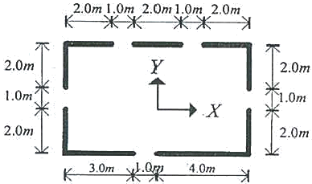
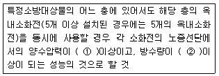
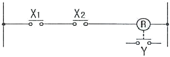
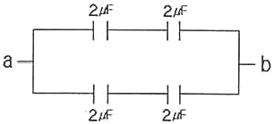
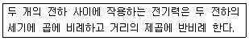
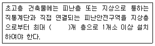
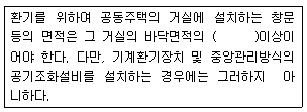
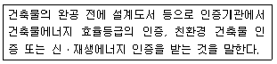
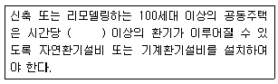

건축설비기사 (2013-03-10 기출문제)
1과목: 건축일반
1. 건물에서의 열전달에 관련된 용어의 단위 중 옳지 않은 것은?
- 열전도율 : W/(m2ㆍK)
- 대류열전달율 : W/(m2ㆍK)
- 열저항 R : W/(m2ㆍK)
- 열관류율 K : W/(m2ㆍK)
(정답률: 70%)

2. 고층 밀집형 병원의 장점이 아닌 것은?
- 대지를 효율적으로 이용할 수 있다.
- 병동에서의 조망을 확보할 수 있다.
- 설비의 집중화가 가능하다.
- 수직교통을 위한 운반비가 적게 든다.
(정답률: 78%)
3. 아파트 단지내의 인동간격 결정요소가 아닌 것은?
- 대지의 경사도
- 태양의 고도 및 방위각
- 지면에서 개구부 하단부까지의 높이
- 후면(북측면) 건물의 높이
(정답률: 57%)
4. 학교의 강당계획에 관한 설명 중 옳지 않은 것은?
- 강당의 면적 산출에서 고정 의자식의 경우가 이동 의자식의 경우보다 그 면적이 크다.
- 강당은 체육관과 겸하도록 계획하는 것이 좋다.
- 강당의 위치는 외부와의 연락이 좋은 곳에 배치한다.
- 강당 연단 주위에는 반사재를 그리고 먼 곳에는 흡음재를 사용하여 음향효과가 좋게 한다.
(정답률: 83%)
5. 목조 왕대공 지붕틀에서 압축력과 휨모멘트를 동시에 받는 부재는?
- 빗대공
- 평보
- 중도리
- ㅅ자보
(정답률: 81%)
6. 상점 진열창의 눈부심(glare)을 방지하는 대책으로 옳지 않은 것은?
- 차양을 달아서 외부에 그늘을 주어 내부보다 어둡게 한다.
- 야간에는 눈에 입사하는 광속(光速)을 크게 한다.
- 특수한 곡면 유리를 사용한다.
- 유리면을 경사지게 하여 반사각을 조정한다.
(정답률: 75%)
7. 호텔의 종류 중 상업상ㆍ사업상의 여행자, 관광객, 단기체재자 등의 일반여행자를 대상으로 하며, 스위트룸과 호화로운 설비를 갖춘 호텔은?
- 산장호텔
- 레지덴셜호텔
- 아파트먼트호텔
- 클럽하우스
(정답률: 82%)
8. 아파트 평면형식 중에서 일조 및 통풍이 유리하고, 프라이버시가 침해되기 쉬우나 같은 층에 거주하는 사람과의 친교 기회가 많은 형식은?
- 홀형
- 계단실형
- 편복도형
- 중복도형
(정답률: 85%)
9. 벽돌쌓기에 대한 기술로 옳지 않은 것은?
- 영식쌓기는 모서리에 반절 또는 이오토막을 사용한다.
- 미식쌓기는 막힌줄눈이 많이 생겨 구조적으로 영식쌓기보다 튼튼하다.
- 불식쌓기는 통줄눈이 많이 생기며 의장적 효과를 나타내기 위한 벽체에 사용된다.
- 화란식쌓기는 모서리에 칠오토막을 사용하고 주로 내력벽에 사용된다.
(정답률: 75%)
10. 실내음향설계 시 주의할 사항으로 옳지 않은 것은?
- 직접음과 반사음의 시간차를 가능한 크게 하여 충분한 음보강이 되도록 한다.
- 강연이나 연극 등 언어를 주사용 목적으로 할 경우 잔량시간은 비교적 짧게 처리한다.
- 방해가 되는 소음이나 진동을 완전히 차단하도록 한다.
- 실의 어느 위치에서나 음 분포가 균등하도록 한다.
(정답률: 80%)
11. 다음 그림과 같은 블록 내력벽체의 X방향 벽량은?

- 0.2 m/m2
- 0.225 m/m2
- 0.325 m/m2
- 0.525 m/m2
(정답률: 66%)
12. 주택의 침실계획으로 옳은 것은?
- 부부침실은 가사공간 가까운 곳에 배치한다.
- 노인침실은 식당, 욕실 및 화장실 등을 근접시킨다.
- 자녀침실은 안방 가까운 곳에 두어 쉽게 감독할 수 있게 한다.
- 성장하는 자녀들의 침실은 2인 1실이 독실에 비해 바람직하다.
(정답률: 69%)
13. 인체의 쾌적한 환경에 영향을 미치는 물리적 온열요소에 속하지 않는 것은?
- 기온
- 습도
- 복사열
- 열전도
(정답률: 81%)
14. 철근콘크리트 플랫 슬래브(flat slab)의 구성요소가 아닌 것은?
- 받침판(Drop panel)
- 주두(Capital)
- 작은 보(Beam)
- 외부보(Spandrel)
(정답률: 78%)
15. 곡면판이 지니는 역학적 특성을 응용한 구조로서 외력은 주로 판의 면내력으로 전달되기 때문에 경량이고 내력이 큰 구조물을 구성할 수 있는 구조는?
- 절판구조
- 셀구조
- 현수구조
- 입체트러스구조
(정답률: 70%)
16. 잔향시간이란 음의 음압레벨이 얼마 감쇠하는데 소요되는 시간인가?
- 50 dB
- 60 dB
- 70 dB
- 80 dB
(정답률: 89%)
17. 백화점의 수송설비 계획과 관련한 설명으로 옳지 않은 것은?
- 중소규모 백화점인 경우 엘리베리터는 주 출입구 부근에 설치한다.
- 에스컬레이터는 수송량에서 엘리베이터보다 유리하다.
- 에스컬레이터는 주 출입구에 가까워야 하며, 고객이 곧 알아볼 수 있는 위치라야 한다.
- 엘리베이터는 고객용 이외에 사무용, 화물용도 따로 있는 것이 좋다.
(정답률: 78%)
18. 표면결로의 방지대책으로 옳지 않은 것은?
- 냉교(cold bridge)가 생기지 않도록 주의한다.
- 화니로 실내절대습도를 저하시킨다.
- 실내에서 수증기 발생을 억제한다.
- 외벽의 단열강화로 실내측 표면온도를 저하시킨다.
(정답률: 81%)
19. 사무소건축의 실 단위계획 중 개방식 배치(dpen plan)에 대한 설명으로 옳지 않은 것은?
- 독립성과 쾌적감의 이점이 있다.
- 전면적을 유용하게 이용할 수 있다.
- 개실시스템(cellular type)보다 공사비가 저렴하다.
- 자연채광에 보조채광으로 인공채광이 필요하다.
(정답률: 80%)
20. 다음 중 아치 구조에 대한 설명으로 옳지 않은 것은?
- 상부에서 오는 수집압력이 아치 측선을 따라 직압력만으로 전달하게 한 것이다.
- 조적조에서는 환기구멍 등의 작은 문꼴이라도 아치를 트는 것이 원칙이다.
- 창문너비 3m 정도는 특별한 보강없이 평아치로 할 수 있다.
- 부재의 하부에 인장력이 생기지 않게 한 구조이다.
(정답률: 74%)
2과목: 위생설비
21. 간접배수로 하여야 하는 기구에 해당하지 않는 것은?
- 냉장고
- 제빙기
- 세탁기
- 세면기
(정답률: 83%)
22. 급수배관의 부식으로 인한 결과로 볼 수 없는 것은?
- 누수
- 수질악화
- 마찰손실 증대
- 배관두께 증대
(정답률: 80%)
23. 배수계통에서 트랩의 봉수가 파괴되는 원인 중 액체의 응집력과 액체와 고체 사이의 부착력에 의해 발생하는 것은?
- 증발 현상
- 모세관 현상
- 자기사이폰 작용
- 유도사이폰 작용
(정답률: 72%)
24. 다음 중 용적식 펌프에 해당하지 않는 것은?
- 터빈 펌프
- 기어 펌프
- 베인 펌프
- 피스톤 펌프
(정답률: 53%)
25. 시간당 200L의 급탕을 필요로 하는 건물에서 전기온수기를 사용하여 급탕을 하는 경우 필요전력량은? (단, 물의 비열은 4.2kJ/kgㆍK, 급수온도는 10℃, 급탕온도는 60℃, 전기온수기의 가열효율은 95%이다.)
- 11.1kW
- 11.7kW
- 12.3kW
- 13.5kW
(정답률: 57%)
26. 배수ㆍ통기 양 계통간의 공기의 유통을 원활히 하기 위해 설치하는 통기관은?
- 각개통기관
- 루프통기관
- 도피통기관
- 공용통기관
(정답률: 55%)
27. 정화조에의 유입수 BOD가 300mg/L이며, 방류수 BOD가 150mg/L일 때 BOD 제거율은?
- 40%
- 50%
- 60%
- 70%
(정답률: 79%)
28. 게이트 밸브(Gate valve)에 관한 설명으로 옳은 것은?
- 슬루스 밸브하고도 하며 급수, 급탕용으로 많이 사용된다.
- 유체를 일정한 방향으로만 흐르게 하고 역류를 방지하는데 주로 사용된다.
- 밸브를 완전히 열 경우 단면적이 갑자기 작아지므로 유체에 대한 마찰저항이 크다.
- 수평배관에만 사용되며 핸들을 90˚ 회전시키면 불이 회전하여 완전 개폐가 가능하다.
(정답률: 78%)
29. 먹는물의 수소이온농도 기준으로 옳은 것은?
- pH 4.8 이상 pH 8.4 이하
- pH 5.8 이상 pH 8.5 이하
- pH 4.8 이상 pH 8.5 이하
- pH 5.8 이상 pH 8.4 이하
(정답률: 68%)
30. 국소식 급탕방식에 관한 설명으로 옳지 않은 것은?
- 배관 및 기기로부터의 열손실이 많다.
- 급탕개소마다 가열기의 설치 스페이스가 필요하다.
- 건물 완공 후에도 급탕 개소의 증설이 비교적 쉽다.
- 용도에 따라 필요한 개소에서 필요한 온도의 탕을 비교적 간단히 얻을 수 있다.
(정답률: 74%)
31. 최대 방수구역에 설치된 스프링클러헤드의 개수가 20개인 경우, 스프링클러설비의 수원의 저수량은 최소 얼마 이상이 되도록 하여야 하는가? (단, 개방형 스프링클러헤드를 사용하는 경우)
- 17m3
- 32m3
- 48m3
- 64m3
(정답률: 74%)
32. 급수기구의 최저필요압력으로 옳지 않은 것은?
- 일반수전 : 30kPa
- 샤워기 : 70kPa
- 대변기 세정밸브(일반대변기용) : 70kPa
- 소변기 세정밸브(벽걸이형 소변기) : 50kPa
(정답률: 60%)
33. 다음 중 양수펌프로 사용되는 원심펌프에서 흡입 양정이 이론치에 미치지 못하는 가장 큰 이유는?(오류 신고가 접수된 문제입니다. 반드시 정답과 해설을 확인하시기 바랍니다.)
- 대기압
- 관로손실
- 펌프의 동력
- 토출양정과의 차이
(정답률: 7%)
34. 다음 중 위생설비를 유니트화하여 얻는 이점과 가장 관계가 먼 것은?
- 공기의 단축
- 품질의 향상
- 공장 작업의 최소화
- 현장 작업의 안전성 향상
(정답률: 66%)
35. 펌프의 양수량이 1000L/min, 실양정이 30m인 급수펌프의 축동력은? (단, 마찰손실은 실양점의 20%, 펌프의 효율은 50%이다.)
- 5.9kW
- 9.8kW
- 11.8kW
- 14.1kW
(정답률: 53%)
36. 터보형 펌프에 관한 설명으로 옳지 않은 것은?
- 최고양정의 증가비율은 비속도가 증가함에 따라 크게 된다.
- 비속도가 작은 펌프는 양수량이 변화하여도 양정의 변화가 작다.
- 비속도가 작은 펌프는 양정변화가 큰 용도에 적합하며 유량변화가 큰 용도에는 부적합하다.
- 어느 2종류의 터보형 펌프가 있을 때, 비속도가 동일하다면 펌프의 대소에 관계없이 각각의 펌프가 갖는 회전차는 모두 상사(相似)이다.
(정답률: 47%)
37. 도시가스 사용시설에서 가스계량기오 전기계량기의 간격은 최소 얼마 이상으로 하여야 하는가?
- 15cm
- 30cm
- 45cm
- 60cm
(정답률: 73%)
38. 다음 중 원칙적으로 청소구(clean out)를 설치하여야 하는 곳이 아닌 것은?
- 배수수직관의 최상부
- 배수 수평주관의 기점
- 배수 수평지관의 기점
- 배수관이 45˚ 이상의 각도로 방향을 바꾸는 곳
(정답률: 79%)
39. 다음은 옥내소화전설비에서 전동기에 따른 펌프를 이용하는 가압송수장치에 관한 설명이다. ()안에 알맞은 것은?

- ① 0.17MPa, ② 130L/min
- ① 0.25MPa, ② 130L/min
- ① 0.17MPa, ② 350L/min
- ① 0.25MPa, ② 350L/min
(정답률: 68%)
40. 급탕배관방식 중 헤더방식에 관한 설명으로 옳지 않은 것은?
- 지관을 소구경의 배관으로 할 수 있다.
- 헤더로부터의 지관 도중에 관이음 시공부가 많다.
- 슬리브 공법을 채용하면 배관의 교환이 용이하다.
- 한 계통마다 관로의 보유수량이 적어 급탕 대기 시간을 단축 할 수 있다.
(정답률: 62%)
3과목: 공기조화설비
41. 냉각탑의 냉각능력이 42kW 이고 냉각수 입ㆍ출구 온도 차이가 5℃일 때 냉각수 순환량은? (단, 물의 밀도는 1kg/L, 비열은 4.2kJ/kgㆍK 이다.)
- 100 L/min
- 110 L/min
- 120 L/min
- 130 L/min
(정답률: 55%)
42. 다음 중 증기난방에 가장 많이 사용되는 배관재료는?
- 동관
- 염화비닐관
- 스테인리스관
- 아연도금을 하지 않은 흑관
(정답률: 60%)
43. 다음 중 전열교환기의 기능과 가장 거리가 먼 것은?
- 현열교환
- 잠열교환
- 단열가습
- 자정작용
(정답률: 46%)
44. 공조기 코일의 설치목적에 따른 분류에 해당하는 것은?
- 건코일
- 예냉코일
- 냉수코일
- 풀서킷코일
(정답률: 48%)
45. 다음과 같은 냉방부하의 구성요인 중 현열만을 취득하는 것은?
- 인체에서의 발생열
- 극간풍에 의한 취득열
- 유리를 통과하는 복사열
- 외기 도입에 의한 취득열
(정답률: 80%)
46. 다음 중 콜드 드래프트의 발생원인과 가장 거리가 먼 것은?
- 주위 벽면의 온도가 낮을 때
- 인체 주위의 공기 온도가 낮을 때
- 인체 주위의 공기 습도가 낮을 때
- 인체 주위의 공기 속도가 낮을 때
(정답률: 71%)
47. 취출기류의 속도분포와 관련하여 4단계의 영역으로 구분 할 경우, 제1영역에 관한 설명으로 옳은 것은?
- 일명 천이구역이라고도 한다.
- 취출구에서 분출되는 공기는 아주 짧은 거리에서 속도의 변화가 없다.
- 취출거리의 대부분을 차지하며, 취출구의 종류에 따라 특성이 현저하다.
- 취출기류의 속도가 급격히 감소되며 혼합된 공기까지도 주위로 확산되는 영역이다.
(정답률: 51%)
48. 덕트 내의 풍속이 20m/s, 정압이 200Pa 일 경우 전압의 크기는? (단, 공기의 밀도는 1.2kg/m3이다.)
- 212Pa
- 220Pa
- 330Pa
- 440Pa
(정답률: 59%)
49. 중앙식 공기조화기에서 가습방식의 분류 중 수분무식에 속하지 않는 것은?
- 원심식
- 분무식
- 초음파식
- 적외선식
(정답률: 61%)
50. 동일한 풍량을 송풍할 때 덕트의 마찰손실이 가장 작은 단면 형태는?
- 원형
- 정삼각형
- 정사각형
- 직사각형
(정답률: 77%)
51. 다음 공기조화방식 중 중앙방식에 해당하지 않는 것은?
- 수방식
- 냉매방식
- 전공기방식
- 공기ㆍ수방식
(정답률: 74%)
52. 난방도일(heating degree day)에 관한 설명으로 옳지 않은 것은?
- 추운 날이 많은 지역일수록 난방도일은 커진다.
- 난방도일의 계산에 있어서 일사량은 고려하지 않는다.
- 난방도일은 난방용 장치부하를 경정하기 위한 것이다.
- 일반적으로 난방도일이 큰 지역일수록 연료소비량은 증가한다.
(정답률: 61%)
53. 다음 중 유리창에 의한 일사 냉방부하 산정과 가장 관계가 먼 것은?
- 방위
- 유리면적
- 차폐계수
- 열관류율
(정답률: 52%)
54. 중앙식 공기조화기에서 가습기의 형식 선정시 유의사항으로 옳지 않은 것은?
- 공기조화기(AHU)에 가습기를 배치할 때 코일의 전ㆍ후 위치를 검토한다.
- 가습과정의 열수분비를 확인하여 저온의 공기도 가습효과가 큰지 확인한다.
- 수분무의 경우 가습효율이 높으므로 엘리미테이터의 설치에 대한 고려를 하지 않는다.
- 분무노즐을 사용하는 경우는 분출압력이 높으면 가습효율은 증가되지만 소음이 증가되므로 소음대책도 검토한다.
(정답률: 77%)
55. 각종 밸브에 관한 설명으로 옳지 않은 것은?
- 글로브 밸브는 유량조절용으로 사용된다.
- 볼밸브는 관경이 비교적 작은 경우에 개폐용으로 사용된다.
- 체크밸브는 유체를 한 방향으로만 흐르게 하는 역류 방지용 밸브이다.
- 게이트 밸브는 유체의 흐름방향이 90˚로 전환되므로 유체 저항이 크다.
(정답률: 73%)
56. 각종 공기조화방식에 관한 설명으로 옳은 것은?
- 유인유닛방식은 송풍량이 커서 외기 냉방의 효과가 크다.
- FCU방식은 각 실에 수배관으로 인한 누수의 우려가 없다.
- 2중덕트방식은 부하특성이 다른 다수의 실이나 존에도 적용할 수 있다.
- 단일덕트방식은 냉ㆍ온풍의 혼합으로 인한 혼합손실이 있어 에너지 소비량이 많다.
(정답률: 56%)
57. 온수난방장치의 시공에 관한 설명으로 옳지 않은 것은?
- 팽창관에는 밸브를설치해서는 안된다.
- 환수관은 보온 처리를 하지 않도록 한다.
- 각 방열기에는 수동공기빼기밸브를 부착한다.
- 배관계통에 공기가 정체하는 곳이 없도록 한다.
(정답률: 72%)
58. 증기트랩의 작동원리에 따른 분류 중 기계식 트립에 해당하는 것은?
- 버킷 트랩
- 디스크 트랩
- 벨로즈식 트랩
- 바이메탈식 트랩
(정답률: 53%)
59. 다음 중 축열방식을 이용하는 이유와 가장 거리가 먼 것은?
- 초기투자 비용을 줄일 수 있다.
- 값싼 심야전력을 이용할 수 있다.
- 열원설비 용량을 감소시킬 수 있다.
- 전력 사용량의 피크를 완화시킬 수 있다.
(정답률: 72%)
60. 흡수식 냉동기의 냉동사이클을 바르게 나타낸 것은?
- 압축→응축→팽창→증발
- 흡수→발생→응축→증발
- 흡수→증발→압축→응축
- 압축→증발→응축→팽창
(정답률: 61%)
4과목: 소방 및 전기설비
61. 그림의 회로도와 같이 논리식이 Y=X1ㆍX2로 표시되는 논리회로의 종류는?

- AND회로
- OR회로
- NOT회로
- NAND회로
(정답률: 62%)
62. 20Ω과 30Ω의 저항이 병렬로 연결되어 있을 때 총저항은?
- 12Ω
- 30Ω
- 50Ω
- 64Ω
(정답률: 68%)
63. 공기조화기, 급ㆍ배수 펌프, 엘리베이터 등의 기기에 전력을 공급하는 간선을 무엇이라 하는가?
- 동력 간선
- 전등 간선
- 은폐 간선
- 특수용 간선
(정답률: 74%)
64. 다음과 같은 회로에서 a, b간의 합성 정전용량은?

- 1[㎌]
- 2[㎌]
- 4[㎌]
- 8[㎌]
(정답률: 65%)
65. 다음의 설명에 알맞은 법칙은?

- 옴의 법칙
- 렌쯔의 법칙
- 쿨룽의 법칙
- 키르히로프의 법칙
(정답률: 58%)
66. 단상 변압기의 병렬운전조건에 해당되지 않는 것은?
- 극성이 같을 것
- 권선비가 같을 것
- 상회전 방향이 같을 것
- 각 변압기의 %임피던스가 같을 것
(정답률: 46%)
67. 단상 변압기 3대로 3상 결선하는 방식이 아닌 것은?
- Y-△결선
- △-△결선
- △-Y결선
- V-V결선
(정답률: 52%)
68. 자체 인덕턴스 3[H]의 코일에 10[A]의 전류가 흐른다면, 이 코일에 축적되는 에너지[J]는?
- 100
- 150
- 200
- 250
(정답률: 60%)
69. 할로겐 램프에 관한 설명으로 옳지 않은 것은?
- 휘도가 낮다.
- 흑화가 거의 일어나지 않는다.
- 백열전구에 비해 수명이 길다.
- 광속이나 색온도의 저하가 극히 적다.
(정답률: 72%)
70. 가동코일형 계기에 관한 설명으로 옳은 것은?
- 고주파용이다.
- 교류 전용이다.
- 직류 전용이다.
- 직류, 교류 양용이다.
(정답률: 56%)
71. 누전차단기에서 검출기구로 사용되는 것은?
- 계전기
- 콘덴서
- 영상변류기
- 유입차단기
(정답률: 68%)
72. 전기식 자동제어 시스템에서 리미트 조절기의 설정치보다 제어량이 저하되었을 때 리미트 조절기가 주조절기의 동작과 관계없이 조작기를 직접 작동시켜 조작기가 열리거나 운전되도록 하는 제어방법은?
- 상한제어
- 하한제어
- 최소개도제어
- 외기도입제어
(정답률: 67%)
73. 다음 중 연기감지기의 설치장소로 가장 알맞은 것은?
- 엘리베이터 권상기실
- 높이 20[m] 이상인 장소
- 부식성 가스가 체류하고 있는 장소
- 주방 등 평시에 연기가 발생하는 장소
(정답률: 51%)
74. 교류전력에 관한 설명으로 옳지 않은 것은?
- 무효전력이 크면 역률이 커진다.
- 유효전력은 실제로 소비되는 전력이다.
- 역률이 1일 때 유효전력과 피상전력은 같다.
- 전열기와 같이 순수하게 저항성분만으로 구성되는 부하인 경우 전력은 전압[V]×전류[A]이다.
(정답률: 52%)
75. 밸브연결구와 조합되어 밸브의 비례제어용으로 사용되기도 하며, 댐퍼연결구와 조합되어 댐퍼의 비례제어용으로 사용되기도 하는 전동조작기는?
- 인버터
- 서보 모터
- 모듀트롤 무터
- 권선형 유도전동기
(정답률: 67%)
76. 역률이 나쁘다는 결점이 있으나, 구조와 취급이 간단하여 건축설비에서 가장 널리 사용되고 있는 전동기는?
- 동기전동기
- 분권전동기
- 직권전동기
- 유도전동기
(정답률: 51%)
77. 온수보일러의 자동제어에 관한 설명으로 옳지 않은 것은?
- 팽창수조와 인터록시켜야 한다.
- 팽창수조는 만수 및 감수 경보표시기능이 있어야 한다,
- 팽창수조의 감수시에는 온수보일러와 순환펌프가 정지되어야 한다.
- 온수계통의 동결 우려시 관내 온수온도를 검출하여 온수순환 펌프가 자동운전 되도록 한다.
(정답률: 45%)
78. 절연물의 손상이 없이 안전하게 흐를 수 있는 최대전류의 값을 무엇이라 하는가?
- 피상전류
- 부하전류
- 절연전류
- 허용전류
(정답률: 71%)
79. 변압기에 관한 설명으로 옳지 않은 것은?
- 철심은 자속을 이동시키는 통로의 역할을 한다.
- 2차측 코일은 자기유도 작용을 발생시키는 역할을 한다.
- 변압기의 원리는 자속의 변화에 의한 전자유도현상을 응용한 것이다.
- 송배전 계통은 물론 각 수용가의 가전제품에서 잔압을 높이거나 낮추기 위하여 사용되는 전기기기이다.
(정답률: 51%)
80. 반사 글레어에 관한 설명으로 옳지 않은 것은?
- 반사면이 평활할 경우 강하게 나타난다.
- 반사면이 광택이 있는 면일 경우 강하게 나타난다.
- 반사면이 정반사율이 높은 면일수록 강하게 나타난다.
- 휘도가 높은 광원을 직시하였을 때 나타나는 현상이다.
(정답률: 36%)
5과목: 건축설비관계법규
81. 다음의 소방시설 중 소화활동설비에 속하지 않는 것은?
- 제연설비
- 연결살수설비
- 옥외소화전설비
- 무선통신보조설비
(정답률: 45%)
82. 건축물의 에너지절약설계기준에 따른 기밀 및 결로방지등을 위한 조치내용으로 옳지 않은 것은?
- 외기에 직접 면하고 1층 또는 지상으로 연결된 너비 1.0미터의 출입문은 방풍구조로 하여야 한다.
- 건축물 외피 단열부위의 접합부, 틈 등은 밀폐될 수 있도록 코킹과 가스켓 등을 사용하여 기밀하게 처리 하여야 한다.
- 단열재의 이음부는 최대한 밀착하여 시공하거나, 2장을 엇갈리게 시공하여 이음부를 통한 단열성늘 저하가 최소화 될 수 있도록 조치하여야 한다.
- 방습층으로 알루미늄박 또는 플라스틱계 필름 등을 사용할 경우에는 이음부는 100mm 이상 중첩하고 내습성테이프, 접착제 등으로 기밀하게 마감하도록 한다.
(정답률: 69%)
83. 다음은 초고층 건축물에 설치하는 피난안전구역에 관한 기준 내용이다. ()안에 알맞은 것은?

- 10
- 20
- 30
- 40
(정답률: 76%)
84. 오피스텔의 난방설비를 개별난방방식으로 하는 경우에 관한 기준 내용으로 옳지 않은 것은?
- 보일러실은 거실 이외의 장소에 설치할 것
- 보일러실의 윗부분에는 그 면적이 최소 1m2 이상인 환기창을 설치할 것
- 난방구획마다 내화구조로 된 벽ㆍ바닥과 갑종방화문으로 된 출입문으로 구획할 것
- 기름보일러를 설치하는 경우에는 기름저장소를 보일러 실외에 다른 곳에 설치할 것
(정답률: 69%)
85. 다음 중 방염성능기준 이상의 실내장식물 등을 설치하여야 하는 특정소방대상물이 아닌 것은?
- 숙박시설
- 공동주택 중 아파트
- 의료시설 중 종합병원
- 방송통신시설 중 방송국
(정답률: 72%)
86. 건축 법령상 용도별 건축물의 종류에 관한 설명으로 옳은 것은?
- 의료시설에는 한의원, 종합병원 등이 해당된다.
- 공동주택에는 공관, 기숙사, 아파트 등이 해당된다.
- 단독주택에는 다가구주택, 다세대주택 등이 해당된다.
- 제1종 근린생활시설에는 의원, 치과의원 등이 해당된다.
(정답률: 50%)
87. 심야시간에 얼음을 제조하여 축열조에 저장하였다가 기타 시간에 이를 녹려 냉방에 이용하는 냉방설비는?
- 수출열식
- 빙축열식
- 잠열축열식
- 부분축냉방식
(정답률: 70%)
88. 건축법령에 따른 단독주택에 설치하여야 하는 소방시설은?
- 수화수조 및 누전경보기
- 소화기구 및 옥내소화전설비
- 소화수조 및 가스누설결보기
- 수화기구 및 단독경보형감지기
(정답률: 64%)
89. 특별피난계단에 설치하는 배연설비의 구조에 관한 기준내용으로 옳지 않은 것은?
- 배연기에는 예비전원을 설치할 것
- 배연구 및 배연풍도는 불연재료로 할 것
- 배연구가 외기에 접하지 아니하는 경우에는 배연기를 설치할 것
- 배연구는 평상시에는 열린 상태를 유지하고 배연에 의한 기류로 닫히지 아니하도록 할 것
(정답률: 69%)
90. 상업지역 및 주거지역에서 건축물에 설치하는 냉방시설 및 환기시설의 배기구는 도로면으로부터 최소 얼마 이상의 높이에 설치하여야 하는가?
- 1미터
- 1.5미터
- 1.8미터
- 2미터
(정답률: 73%)
91. 건축허가시 미리 소방본부장 또는 소방서장의 동의를 받아야 하는 대상에 속하지 않는 것은?
- 항공기격납고
- 연면적이 100m2인 노유자시설
- 지하층이 있는 건축물로서 바닥면적이 150m2인 층이 있는 것
- 차고ㆍ주차장으로 사용되고 시설로서 차고ㆍ주차장으로 사용되는 층 중 바닥면적 500m2인 층이 있는 시설
(정답률: 66%)
92. 건축물에 설치하는 굴뚝에 관한 기준 내용으로 옳지 않은 것은?
- 굴뚝의 옥상 돌출부는 지분면으로부터의 수직거리를 1미터 이상으로 할 것
- 금속제 굴뚝은 목재 기타 가열재료로부터 15센티미터 이상 떨어져서 설치할 것
- 금속제 굴뚝으로서 건축물의 반자위에 있는 굴뚝의 부분은 금속외의 불연재료로 덮을 것
- 굴뚝의 상단으로부터 수평거리 1미터 이내에 다른 건축물이 있는 경우에는 그 건축물의 처마보다 0.5미터 이상 높게 할 것
(정답률: 48%)
93. 공동주택에서 리모델링에 대비한 특례와 관련하여 리모델링이 쉬운 구조에 해당하지 않는 것은?
- 구조체는 철골구조 또는 목구조로 구성되어 있을 것
- 구조체에서 건축설비, 내부 마감재료 및 외부 마감재료를 분리할 수 있을 것
- 개별 세대 안에서 구획된 실의 크기, 개수 또는 위치 등을 변경할 수 있을 것
- 각 세대는 인접한 세대와 수직 또는 수평 방향으로 통합 하거나 분할할 수 있을 것
(정답률: 50%)
94. 다음은 환기를 위한 창문등과 관련된 기준 내용이다. ()안에 알맞은 것은?

- 5분의 1
- 10분의 1
- 20분의 1
- 30분의 1
(정답률: 60%)
95. 방화구획을 설치하여야 하는 건축물에 스프링클러설비를 설치한 경우, 이 건축물 10층에 걸치하는 방화구획의 최대 바닥면적은?
- 500m2
- 1000m2
- 2000m2
- 3000m2
(정답률: 43%)
96. 제연설비를 설치하여야 하는 특정소방대상물에 해당되지 않는 것은?
- 갓복도아파트에 부설된 특별피난계단
- 문화 및 집회시설로서 무대부의 바닥면적이 200msup>2 이상인 것
- 문화 및 집회시설 중 영화상영관으로서 수용인원 100인 이상인 것
- 지하층에 설치된 숙박시설로서 해당 용도에 사용되는 바닥면적의 합계가 1000m2 이상인 것
(정답률: 54%)
97. 건축물의 바깥쪽에 설치하는 피난계단의 구조에 관한 기준 내용으로 옳지 않은 것은?
- 계단의 유효너비는 0.9미터 이상으로 할 것
- 계단은 내화구조로 하고 지상까지 직접 연결되도록 할 것
- 건축물의 내부에서 계단으로 통하는 출입구에는 갑종방화문을 설치할 것
- 계단은 그 계단으로 통하는 출입구외의 창문 등으로부터 1미터 이상의 거리를 두고 설치할 것
(정답률: 67%)
98. 건축법령상 초고층 건축물의 정의로 옳은 것은?
- 층수가 50층 이상이거나 높이가 150미터 이상인 건축물
- 층수가 50층 이상이거나 높이가 200미터 이상인 건축 물
- 층수가 60층 이상이거나 높이가 180미터 이상인 건축물
- 층수가 60층 이상이거나 높이가 240미터 이상인 건축물
(정답률: 69%)
99. 건축물의 에너지절약설계기준에서 다음과 같이 정의되는 용어는?

- 재인증
- 예비인증
- 사전인증
- 설계인증
(정답률: 54%)
100. 다음의 공동주택(기숙사 제외)의 환기설비기준에 관한 내용 중 ()안에 알맞은 것은?(오류 신고가 접수된 문제입니다. 반드시 정답과 해설을 확인하시기 바랍니다.)

- 0.6회
- 0.7회
- 0.8회
- 0.9회
(정답률: 40%)
열전도율은 단위 면적당 열의 전달량과 온도차이에 대한 비율을 나타내는 값이다. 대류열전달율은 유체나 기체의 움직임에 의한 열전달을 나타내는 값이다. 열저항 R은 열전달이 일어나는 물체의 두 면 사이의 열저항을 나타내는 값이다. 열관류율 K는 열전달이 일어나는 물체의 두 면 사이의 열전도율의 역수를 나타내는 값이다.